Next: Coherent Nuclear Inelastic Scattering Up: Dynamical Susceptibility and Excitations Previous: Evaluating results - Graphical Contents Index
We now apply the theory outlined above to the inelastic scattering of neutrons
in a crystalline solid. The observables measured here are the atomic displacement (for phonons) and the
Fourier transform of the magnetisation (=magnetic moment density) operator of a magnetic ion (
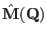).
The magnetisation operator consists of a spin and an orbital contribution and thus
its Fourier transform may be written as a sum
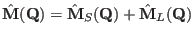.
For consistency with ref.[29] please note that we write the following formulas
in terms of the magnetisation operator instead of the scattering operator
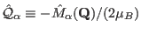 (where 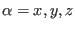 and  is the
Bohr magneton).
is the
Bohr magneton).
The double differential neutron scattering cross section is usually being evaluated base on the master equation (see e.g. [29])
Here 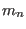 is the neutron mass,  and
and  the incoming and scattered neutron wave vector, 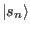 and
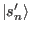 the spin state of the incoming and scattered neutron, 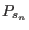 the polarisation of the incoming neutron
beam (i.e. the probability for the neutron spin state 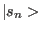 in the incoming neutron beam).
the incoming and scattered neutron wave vector, 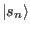 and
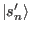 the spin state of the incoming and scattered neutron, 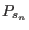 the polarisation of the incoming neutron
beam (i.e. the probability for the neutron spin state 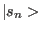 in the incoming neutron beam).  and 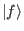 denote
the initial and final states of the target, 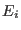 and 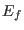 the corresponding energies, 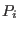 the population number
of the target state
and 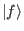 denote
the initial and final states of the target, 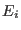 and 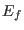 the corresponding energies, 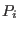 the population number
of the target state  . Finally
is the interaction operator which consists of neutron spin dependent
and spin independent parts
. Finally
is the interaction operator which consists of neutron spin dependent
and spin independent parts
| 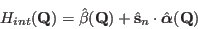 | (246) |
Here contains the nuclear spin independent scattering and the nuclear spin dependent and the electronic magnetic scattering operators. The accurate evaluation of (258) involves the computation of terms 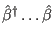 (nuclear scattering, phonons), 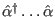 (electronic magnetic scattering and nuclear magnetic scattering) and mixed terms 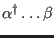 (interference terms, not included in mcdisp currently, maybe nonzero only for polarized beams). We do not take into account any preferred occupancy of nuclear spin states in the sample, either. Then the neutron intensity may be separated into nuclear (phonon) and magnetic intensity. The corresponding expression for the double differential scattering cross section for unpolarised neutrons has been given frequently in literature (see e.g. [29]):
In (260) 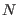 denotes the number of magnetic atoms in the sample,  and
and  the wave vector
of the incoming and scattered neutron, respectively.
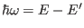 and
the wave vector
of the incoming and scattered neutron, respectively.
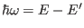 and
 denote the energy and momentum transfer.
The van Hove scattering functions and may be split into an elastic and an inelastic part. We
will discuss here only the inelastic scattering.
denote the energy and momentum transfer.
The van Hove scattering functions and may be split into an elastic and an inelastic part. We
will discuss here only the inelastic scattering.